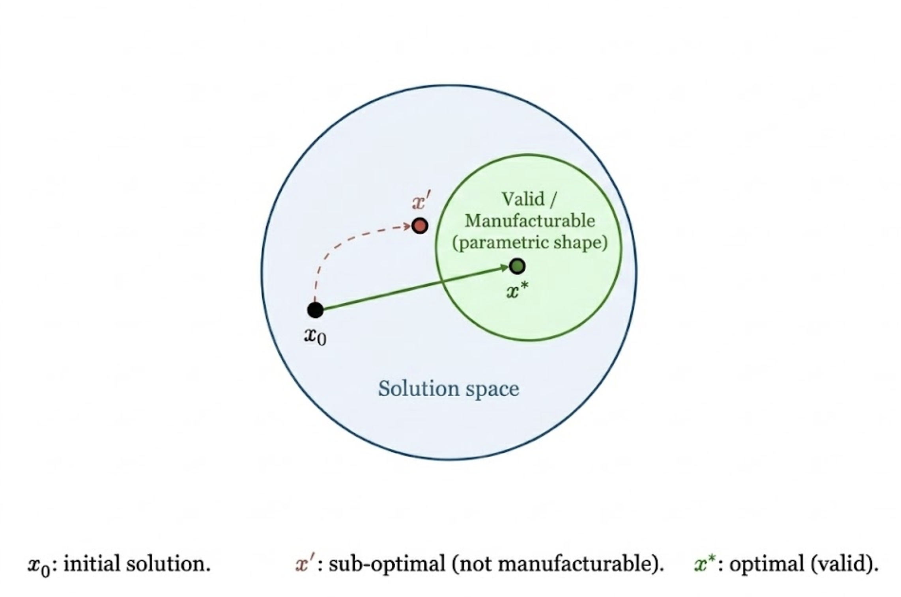
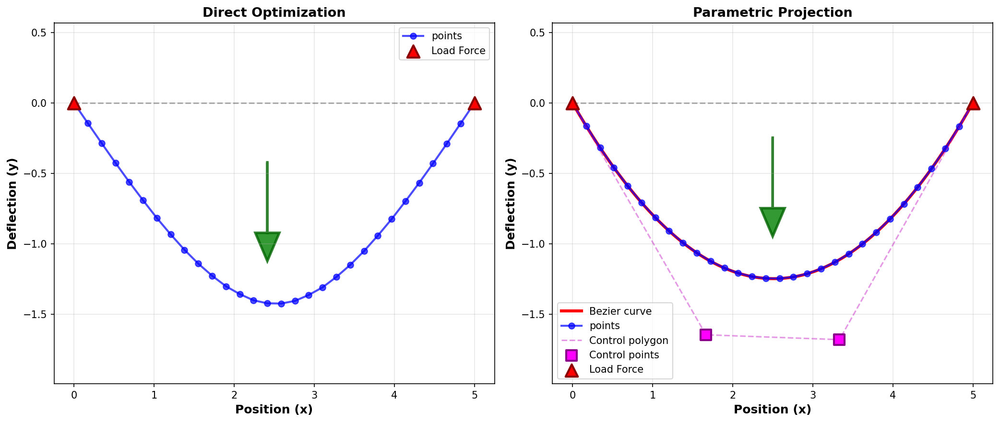
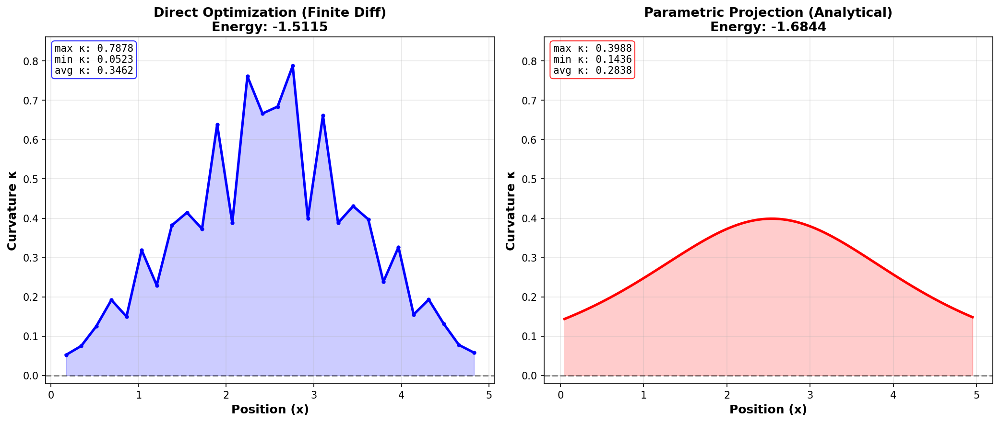
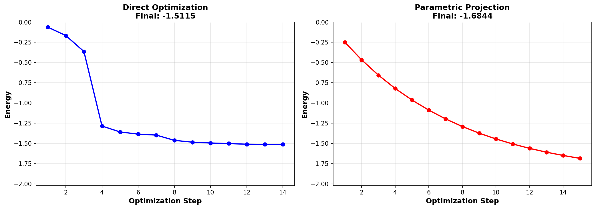

Parametric Shape Prior for Form-Finding
Code: github.com/LuxxxLucy/parametric-projection-shape-prior
Jialin Lu luxxxlucy.github.io
December 21 2025
TLDR: we show that we can do a differentiable projection of discretized points into parametric curves in form finding, and that this parametric curve shape priorI use "prior" here in a loose sense that it is our assumption/constraint on the shapes. not only gives us smooth and manufacturable shape, and also bias the optimization in a meaningful way that converge faster. The projection is essentially a least square fitting which can be made differentiable.
Without constraints, optimization often converges to invalid solutions that minimize energy but aren't manufacturable. What we actually want is $x^*$—a solution that is both optimal and valid. The parametric prior constrains our search.

Form Finding and Shape optimization often is modelled with discretization, a curve is a list of points, a surface is modelled by a grid shell or a more general mesh. These discretizations make computation feasible such as in finite element analysis but more importantly it provides the ability to model very flexible and arbitray geometry. An extreme case is the implicit field, that can model arbitrary geometry as long as we can sample points from it. However this flexibility comes with a price that the resulting shape may not be smooth, manufacturable, or representable by parametric curves.
Often our end goals are not the discretization itself, but THE shape. Having local fluctuations and being non-smooth, they're not directly manufacturable—CNC machines and CAD software expect parametric curves (Bézier, B-splines, NURBS).
This problem gets worse if we move to more expressive representations. Implicit neural fields—NeRFs, neural SDFs— for modelling realistic and complex geometry, but their outputs are sampled points or density values. There's no guarantee that the resulting shape is "valid": smooth, low-curvature, expressible as a parametric curve. The representation is too flexible.
Here we provide a simple demo that we can do optimization with a projection of the discretized points back into a parametric shape, the parametric shape prior that will guide optimization to valid, smooth shapes representable by parametric curves.
The idea is simple: at each optimization step, project the current point solution to the nearest parametric curve. Compute objectives on the projected curve, not on the raw points. Backpropagate through the projection so that the gradient can flow back. Without this constraint, optimization may find invalid solutions.
The projection is done via a fitting of least-squares, which can be made differentiable. Gradients flow from the curve-level loss back to the points.
Demo: A Beam Form-Finding
We start with a simple demo: a one-dimensional bending beamThis application might not make sense for finding the form of a beam (along with the energy we optimize for), but the idea should get by.. Imagine a flexible rod that's fixed at both ends, with a weight pressing down in the middle. The beam bends under this load, and we want to find what shape it takes when it reaches equilibrium—the shape that minimizes the bending energy.
We use a beam of length 5.0, represented by 30 points along its length, with both ends pinned (fixed in place) as the boundary conditions. For both scenarios, we optimize the energy for equilibrium.
Baseline (direct optimization): We directly optimize the vertical positions of points along the beam.
Parametric projection: We still optimize 30 point positions, but at each step we first do a projection steo by fitting these points to a cubic Bézier curve, the fitting is made differentiable and so we can backpropagate through it.
More specifically, we have a set of points $\mathbf{p}_i = (x_i, y_i)$ for $i = 1, \ldots, n$ along the beam. We define an energy function $E$Though I want to note that to some degree the loss function is not really important anyway. The total energy $E = E_{bend} + E_{ext} + E_{reg}$ has three components: (1) Bending energy $E_{bend} = \frac{1}{2} \int (d^2y/dx^2)^2 \, dx$ measures stiffness—higher curvature means more bending and higher energy. (2) External work $E_{ext} = -F \cdot y(x_F)$ accounts for the work done by the applied force $F$ at location $x_F$. (3) Regularization $E_{reg} = \lambda \int y^2 \, dx$ penalizes large deformations. For discrete points, we approximate the integrals using finite differences. that we minimize to find the equilibrium shape.
For the parametric projection, we use a cubic Bézier curve.
\[\mathbf{B}(t) = (1-t)^3\mathbf{P}_0 + 3(1-t)^2t\mathbf{P}_1 + 3(1-t)t^2\mathbf{P}_2 + t^3\mathbf{P}_3, \quad t \in [0, 1]\]
With fixed endpoints $\mathbf{P}_0 = (0, 0)$ and $\mathbf{P}_3 = (L, 0)$ (pinned boundaries), the $y$-component simplifies to
\[B_y(t) = 3(1-t)^2t \cdot y_1 + 3(1-t)t^2 \cdot y_2\]
where $y_1$ and $y_2$ are the $y$-coordinates of the two free control points $\mathbf{P}_1$ and $\mathbf{P}_2$.
At each optimization step, we fit the current discrete points to this Bézier curve via least squaresThe fitting formulation is covered in detail in Cubic Bezier Fitting with Least Squares. For more complex nonlinear fitting, we can always have a lot from the toolbox: implicit gradients or optimization layers, such as cvxpylayers and Theseus.. Given discrete $y$-values $y_i$ at parameter values $t_i$, we construct a design matrix $\mathbf{A}$ with columns $\mathbf{A}_{i,1} = 3(1-t_i)^2t_i$ and $\mathbf{A}_{i,2} = 3(1-t_i)t_i^2$. The least-squares solution is
\[\mathbf{y}_{ctrl} = \arg\min_{\mathbf{y}} \|\mathbf{A}\mathbf{y} - \mathbf{y}_{discrete}\|^2\]
We then evaluate the fitted curve at any $t$ using the formula, compute the energy $E$ on this smooth curve (using analytical curvature), and backpropagate gradients through the least-squares fitting step to update the discrete point positions. here we use cubic Bézier, but the approach should be able to generalize to other parametric families—B-splines, NURBS, or subdivision surfaces—as long as the fitting problem remains differentiable.
Results
Both reach similar deflection, but the projection method gives us further parametric control

Both methods find equilibrium shapes that look good. However, a closer look at the curvature reveals an important difference: direct optimization introduces fluctuations that aren't visible in the overall shape but become apparent when examining the curvature profile.

This is the main problem we've been talking about. Smooth curvature matters. High-curvature spikes mean stress concentrations in physical structures. Notably, even though curvature is already part of the energy function, direct optimization still fails to achieve smooth curvature—this demonstrates that the projection indeed provides better implicit regularization.
It also converges faster.

The projection method gives us multiple advantages: it achieves better energy results, produces smoother curvature profile, provides editability through parametric control points, and converges faster with simple gradient descent.
Limitations and Extensions
A single one-dimensional cubic Bézier curve is unrealistically simple. Real-world geometry is far more complex. Manufacturing and CAD systems work with composite structures — multiple parametric curves, surfaces defined by B-spline patches, corners, and different curve types, concatenated together with boolean operations (union, intersection, etc).
To handle such complexity, we need to devise a way to model the composition of simple curves into bigger ones. The challenge is segmentation: automatically breaking down complex shapes into parametric components that can each be fitted and optimized, then composing them back together.
Since the projection is differentiable, we can apply it to fixed-resolution generative models or implicit fields. Implicit neural fields (NeRFs, SDFs) can model complex, realistic geometry by sampling points from learned representations. We can apply the same projection approach: fit parametric curves or surfaces to the sampled points, compute loss on the parametric representation, and backpropagate to the network. This bridges expressiveness with manufacturability—the implicit field handles complex topology while the parametric projection ensures valid, manufacturable output. End-to-end training with implicit fields, where the network learns to produce outputs that naturally fit parametric representations, is the natural next step.
Takeaway
Parametric projection works: it produces manufacturable shapes and faster convergence. To become truly useful, we need to extend it to handle multiple composite complex shapes made of multiple composite of parametric curves and surfaces, and then the truly exciting goals are to integrate it with realistic end to end generative modeling.